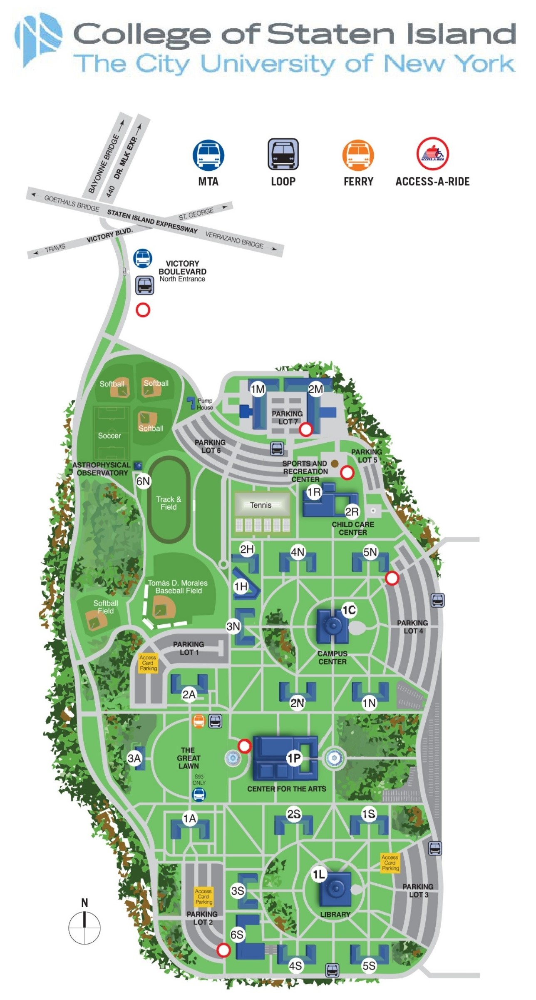

Directions from each lot to the Center for the Arts (1P).
Lot 1:
Lot 2:
Lot 3:
Lot 4:
Note: Click the parking lot buttons to open Google Maps for directions to the lot.
Accessible Parking Directions
1. From the entrance of 1P, follow the road north.
2. Turn right onto the campus service road.
3. Take the second right turn.
4. Look for the Accessible Parking marking.